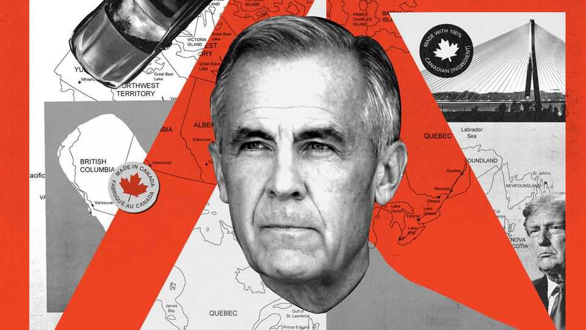
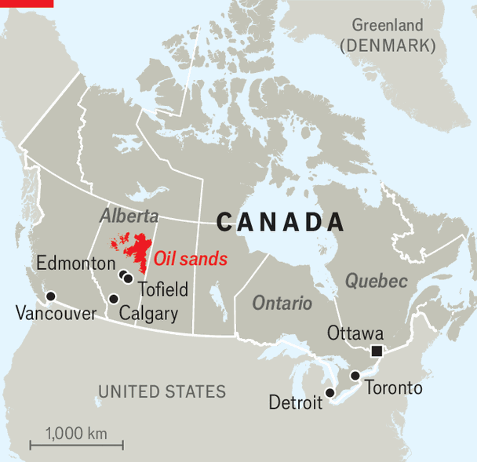
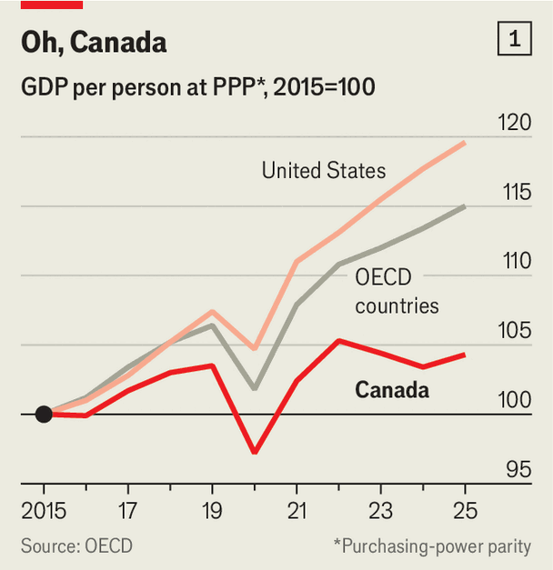
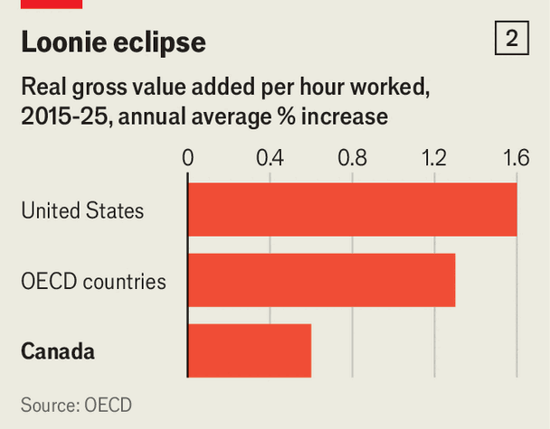
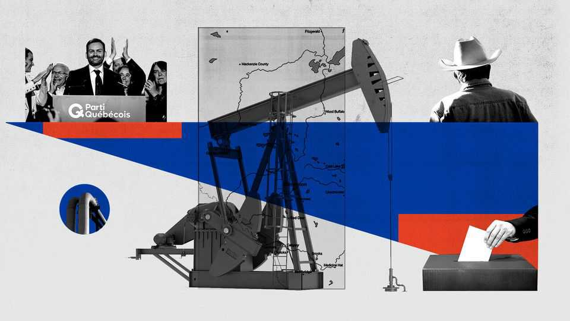

Donald Trump may save Canada
Can America’s bullying goad its northern neighbour out of its complacency?

Oct 15th 2026
“I AM NOT a separatist,” says Brad Osadczuk. “But I am tired of eastern Canada treating us like a red-headed stepchild.” Mr Osadczuk is a cattle rancher from the arid grasslands of Jenner, in the western province of Alberta. On October 19th his oil-rich province—the wealthiest in the country, measured by GDP per person—will hold a referendum. At issue is whether the provincial government should initiate a process that could one day see Alberta become an independent country. Mr Osadczuk plans to vote in favour.
Polls suggest his is a minority opinion. They generally find that at least two-thirds of Albertans would prefer not to go down that road. Even if the pollsters are wrong, separation would not be imminent: a second, binding referendum, and possibly years of negotiation with the federal government would have to follow. All that would provide off-ramps a-plenty.

Yet the vote adds to the troubles besetting a country that, in happier days, was occasionally labelled boring. A narrow defeat could embolden the independence movement and encourage separatists in French-speaking Quebec, who on October 5th returned to power in that province for the first time in more than a decade. Mark Carney, Canada’s popular prime minister, is in the midst of a trade war with the United States, the costs of which could quickly escalate. And in the background looms the underperformance of Canada’s economy, which has stagnated for years.
Canada’s GDP per person grew only about 4% in the ten years to 2025 after adjusting for inflation and shifting exchange rates, compared with 23% in the United States and 15% on average in the OECD, a club mostly of rich countries (see chart 1 ). A recent study caused consternation when it concluded that Canadians had become poorer than Alabamans. “We haven’t had a couple bad years because of Trump,” says Philip Cross of the Macdonald-Laurier Institute (MLI), a right-leaning think-tank. “We’ve had a bad decade.”

The culprit is a long slump in productivity growth. In the 1980s workers in Canada produced nearly 90% as much in an hour as their counterparts south of the border. By 2022 it was down to 71%. Between 2015 and 2023 productivity per hour worked in the private sector grew by just 0.8% annually, according to the OECD. Again, that is below the rich-country average and well below the United States (see chart 2).
Businesses have skimped on investment, particularly since a crash in oil prices in 2014. Even as investment soared by 51% in America between 2014 and 2025, it inched up by only 4.2% in Canada, notes Mr Cross. Canadian businesses spend only about 1% of GDP on research and development, half as much as is typical for a rich country. Inefficient firms are sheltered from competition by thickets of regulation cultivated by provincial governments. These raise costs and make it trickier for people in regulated professions to work outside the province where they were first licensed. In January the IMF concluded that, with these internal barriers, Canada was in effect imposing a 9% tariff on itself.
Another factor that may have weighed on productivity is a recent influx of relatively unskilled workers. After the pandemic the government of the day, led by Justin Trudeau, massively increased immigration to help businesses complaining about labour shortages. In 2022 and 2023 the population grew at the fastest pace since the 1950s, surging by more than a million people in both years. Now 42m, it is 10% higher than it was in 2020, and 16% more than a decade ago. The sudden expansion of the labour pool has given Canadian businesses less incentive to invest in the machines and training that would raise productivity in the long run.

The ballooning population also pushed up housing costs, which were already lofty. The Fraser Institute, another right-leaning think-tank, finds that housing starts in 2021-24 were about the same as in the 1970s, even though annual population growth was three times as high. High housing costs have reduced consumer spending and given bright young sparks more reason to try their luck abroad, many of them in America. Rising house prices have probably also diverted capital away from business, by making bricks and mortar look like a better investment.
Canada’s separatist movements each have their own causes, but the national economy has provided little balm. Frustration in Alberta has festered for decades. The province has 12% of Canada’s population but last year contributed about a quarter of both economic growth and exports.
Many Albertans feel that opportunities to develop their natural resources, for example through new pipelines, have been blocked by people in the more cosmopolitan conurbations of eastern Canada, whose votes have kept Liberal governments in charge of the federal government for two-thirds of the past century. This feeling sharpens grievances about money: Alberta’s residents pay more to the federal budget than they get back in services. It rankles, in particular, that some of that cash helps support people who, because of environmental worries (among other anxieties), have ardently opposed drilling and mining in western Canada.
Alberta’s pro-independence groups include hard-core MAGA-style outfits. In August The Economist attended a madcap meeting in a community centre hung with blue Albertan flags. Speakers railed against immigration. They called Canada’s prime minister a “commie”, a “pinko” and a “globalist”, then repaired to a local bar.
But independence also has more mainstream advocates (critics call them “separatists in suits”). On September 29th some 300 farmers and ranchers attended a community hall in Tofield, a town of about 2,000 people east of Edmonton, Alberta’s capital. They queued up to shake hands with Keith Wilson, a bespectacled lawyer from Calgary, the province’s biggest city, who has become one of the leaders of the independence drive. Mr Wilson denied that voting for separation would deeply scar Alberta’s economy. Companies cannot just pick up the province’s natural resources and depart, he said.
This is the context into which Donald Trump’s trade war with Canada exploded a little over 18 months ago. Exports account for about a third of Canada’s GDP. In 2025 more than 70% of exported goods went to the United States. Among big Western economies, Canada’s exports are the least diversified. For decades Canadian politicians have fretted about this reliance, but made little headway reducing it.
Mr Trump’s tariffs on Canadian goods (and his idle talk of annexing Canada) have waxed and waned. But they shot upwards in August when he placed a 50% tariff on about $20bn of goods, or about 5% of Canada’s exports to America. Further increases loom: Mr Trump has promised to raise the tariff on Canada’s car industry from 25% to 50% on January 1st, should Canada fail to offer unspecified concessions.
The attacks are wounding Canada’s economy, but not mortally. Most bilateral trade remains free owing to the US-Mexico-Canada trade agreement (USMCA), which Mr Trump himself signed in 2018. The average tariff on Canadian exports is near 8%, according to the Yale Budget Lab. Analysts at KPMG, a professional-services firm, think every percentage-point increase in the average tariff trims Canada’s growth rate by 0.15-0.2 percentage points. The central bank expects GDP to grow by 0.7% in 2026 and 1.8% next year.
That is little comfort to the industries most affected, such as steel and carmaking, or to the worst-hit provinces. The effective tariff on goods from Quebec is probably twice as high as for the country as a whole. There are reasons to worry about the fight escalating further. A grim but remote scenario involves the suspension of the whole USMCA. Meanwhile the constant uncertainty is a brand-new obstacle to the investment that Canada so dearly needs.
For all that Mr Trump has tried to take from Canada, his gibes and attacks have given it something in return: a widespread, seething outrage that, harnessed wisely, could make many of its problems easier to fix. Sales of the Canadian flag began soaring soon after Mr Trump’s second inauguration. (Normally, “No one wants to buy a flag in February in Canada because they would freeze their fingers off putting it up,” says Matt Skipp, who runs a firm that makes them.) Canadians abandoned American booze when tariffs hit; supermarkets began slapping big “Made in Canada” stickers on their products.
Perhaps no one has benefited from the national mood more than Mr Carney. In early 2025, days before Mr Trump took office, Mr Trudeau, under pressure due to dire polling numbers, said he would step down as prime minister and leader of the Liberal Party. His successor’s tenure seemed destined to be brief: an election was due and the opposition Conservatives were riding high. Hardly any Canadians could identify Mr Carney’s picture, pollsters had said the year before. But he won not only the leadership but also the subsequent election, buoyed by a wave of anti-Trump, rally-round-the-flag indignation. “I told him in early 2025, ‘You’re the luckiest fucking guy in Canadian politics,’” says Jean Charest, a former premier of Quebec and an adviser to the prime minister.
Even now, the Conservatives are reeling: several of their MPs have defected to the Liberals. One recent poll concluded that 70% of Canadians approve of Mr Carney’s government. This provides him with a huge opportunity, to push through reforms that could benefit Canada long after Mr Trump leaves office.
The prime minister’s first task is to defend Canada’s interests without letting the spat with Mr Trump spin out of control. Canada is one of only a tiny handful of countries to have adopted counter-tariffs against America. Yet it has also offered concessions. Last year it ditched a digital-services tax that would have cost American tech firms. It has allowed itself to be humiliated in a bizarre bust-up over a bridge between Detroit and Ontario which the Trump administration refused to open until Canada agreed, retrospectively, to surrender some of its share of the tolls.
Mr Trump’s mercurial malevolence makes Mr Carney’s main economic project all the more urgent: to get Canada growing faster. In his first months in power he scrapped a consumer carbon tax, cancelled a planned rise in capital-gains tax that would have taken the top rate to 67% and cut the lowest rate of income tax. He has sought to trim the government’s everyday spending to find more cash for investments. By 2029 he wants the federal workforce to be 10% smaller than at its peak in 2024. He has doubled down on earlier plans to reduce immigration and has promised to double housing starts to 500,000 a year over the next decade.

In September at a conclave of foreign investors Mr Carney announced a “productivity mega-deduction” permitting firms to write off spending on new equipment immediately. That builds on a “super-deduction” unveiled last year. The new rules will slash the effective corporate tax rate. The “Building Canada Act”, meanwhile, speeds up approvals for big projects the government deems “in the national interest”.
On October 1st Mr Carney posed by a hulking mining truck in Alberta’s petroleum patch to announce that a new pipeline carrying oil to Canada’s west coast had become one of the first schemes to earn this designation. He says construction should begin in just under a year. That kills two birds with one stone: bolstering the economy by exporting more energy to Asia and mollifying grumpy Albertans.
Mr Carney is also seeking to lessen Canada’s reliance on the United States and boost its place in the world. His government wants to double exports to other countries to C$600bn ($420bn) annually by 2035. In August Mr Carney claimed his government had struck more than 20 trade and security deals across five continents (though some are very vague). In January he went to China—the first visit by a Canadian prime minister in almost a decade—where he secured a lowering of tariffs on Canadian rapeseed oil, among other goods. In March he was in Delhi resetting ties with India, which collapsed in 2023 after Canada accused Indian agents of killing a Sikh activist near Vancouver. Canada says the goal is to double trade between the two countries to around $50bn by 2030.
The latest love-in is with the EU, Canada’s second-biggest trading partner (although the destination of only about 6% of Canada’s goods exports). In September Mr Carney gave an eloquent speech to the European Parliament in Strasbourg. Ursula von der Leyen, president of the European Commission, suggested Canada could one day become an “associate member” of the European Union, though that seemed more of a rhetorical flourish than a plan. More immediate opportunities will doubtless be discussed at an EU-Canada summit later this month. These include speeding up investment in critical minerals and collaborating more closely on defence. In February Canada became the only non-European country to join the EU’s €150bn ($168bn) SAFE scheme, which provides low-interest loans to like-minded governments seeking to boost their military heft.
Gussying up the armed forces is a big part of raising Canada’s standing in the world. (This, Mr Carney promises, will also provide plenty of opportunities for Canadian firms). In 2024 military spending was around 1.3% of GDP, one of the lowest rates in NATO. This year it soared to 2%, after one of the biggest year-on-year increases in defence spending in Canada’s history. Now the plan is to double spending again, to 4%, as soon as 2030. Canada’s generals are delighted: after years counting pennies, their main problem now is getting value for money on their spending spree. The government also wants to reduce the armed forces’ reliance on American kit.
What does all this amount to? The corporate “mega deduction” is a big deal for investors, says Joseph Steinberg of the University of Toronto. He worries that other parts of the economic programme amount to “announcements, or the creation of new agencies that are intended to eventually make things happen faster”. Efforts to speed up big, important projects are welcome, but do not alter politicians’ habit of “picking winners” instead of improving the business environment for all.
Mr Carney’s pugilistic talk is immensely popular with ordinary Canadians and Trump-weary foreigners. But business types and policy wonks see a high risk of provoking America’s thin-skinned president with little upside. Firms will not commit billions of dollars in investment “just because somebody gives a nice speech”, says Mr Cross of MLI. Canada’s counter-tariffs split economists, too. Many think they increase hardship for Canadians without doing much to change Mr Trump’s mind.
Other middle powers are not inclined to follow Mr Carney’s lead when it comes to confronting Mr Trump. Mr Carney remains vulnerable to complaints about the cost of living, a worry Canadians reliably rank as their top concern. He is accused of high-handedness, turning up to Parliament only sporadically, for instance. Indigenous leaders gripe that they are not being properly consulted about economic development.
Yet zoom out, and there is little doubt that on many fronts Mr Carney is making progress that would have seemed unthinkable just two years ago. Although much of his programme resembles the policies of the opposition, his broad support allows him to go further and faster than they might have dared. Mr Charest, the former premier of Quebec, believes Canadians may one day thank America’s president for shocking them out of a slumber. “The forces of inertia in Canada had become overwhelming,” he says. “Trump is now telling us we have no choice but to change.” ■